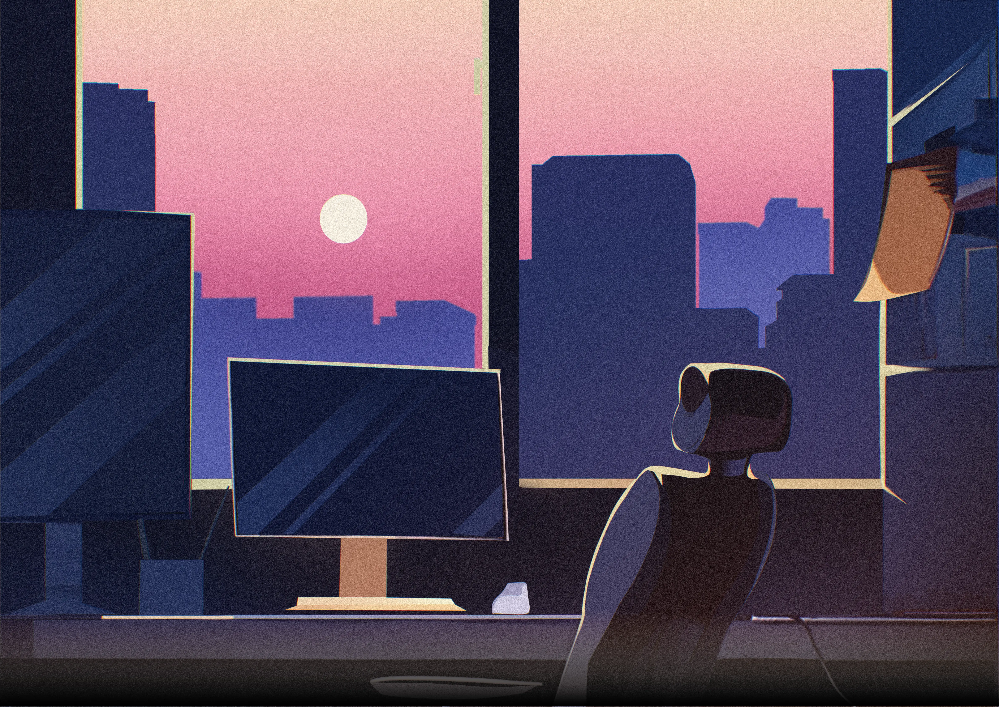
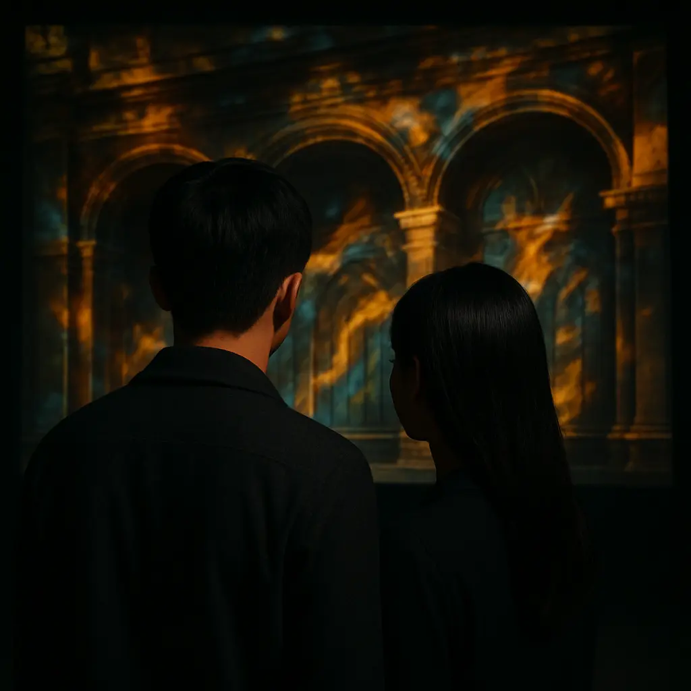
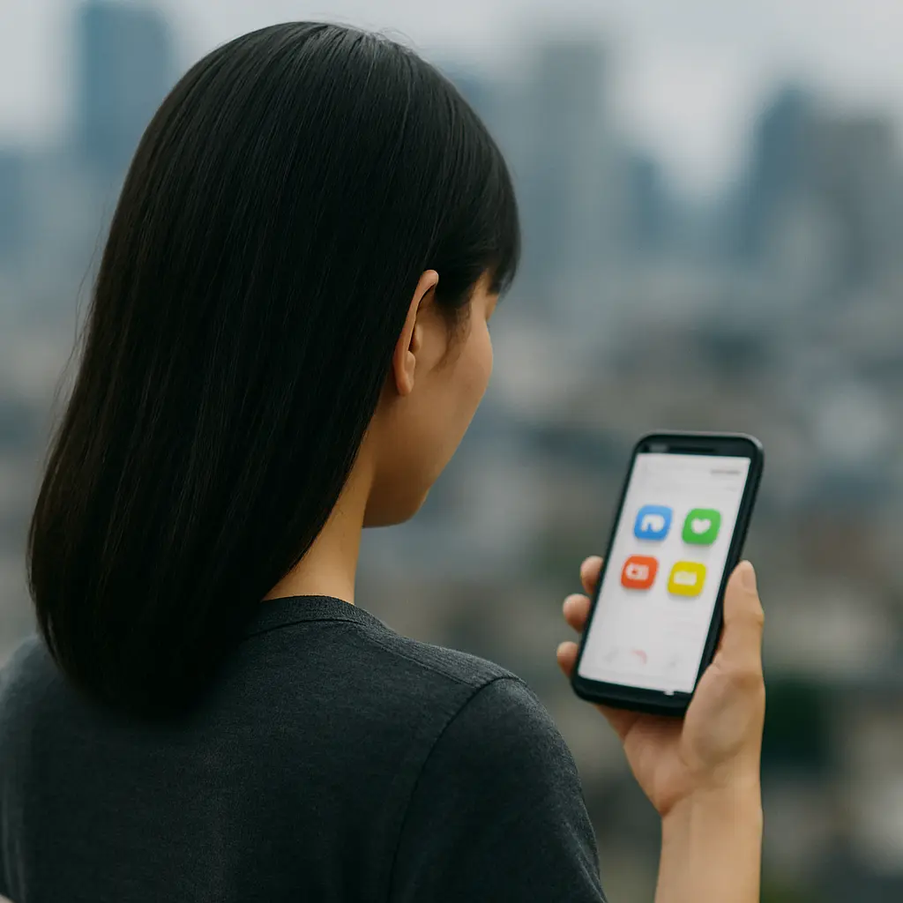

AFTERGLOW, EVERGLOW
여운, 잔광으로 오래도록 기억되기를
AFTERGLOW
제 24회 숭실대학교 글로벌미디어학부 졸업전시AFTERGLOW는 우리의 지난 시간을 찬찬히 되돌아보며, 가장 아름답게 빛나는 순간을 담아낸 전시입니다.
노을이 가장 눈부신 순간은 해가 지기 직전입니다. 우리는 대학이라는 긴 여정을 일주하는 동안, 햇살처럼 밝고 서툰 새내기 시절을 지나, 매일의 일상 속에서 묵묵히 자신만의 색을 채워온 학부생으로 성장해왔습니다. 이제, 마침내 하루의 끝자락에 선 우리는 그간의 모든 시간이 만들어낸 가장 찬란한 잔광을 펼쳐 보이려 합니다.
작품소개


